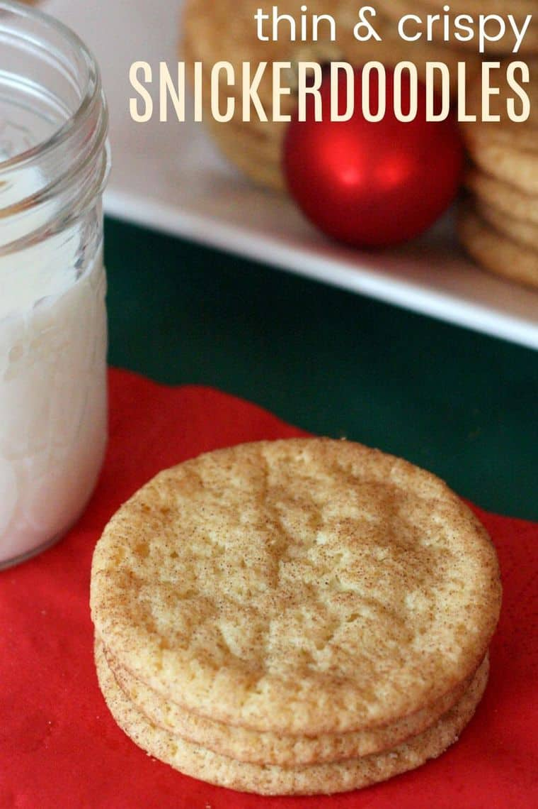

Crispy Snickerdoodles

Description
The classic buttery cookie coated with cinnamon sugar. But with this technique, you will get a thin and crispy cookie that you just can't resist. Perfect for dunking in a cup of tea or milk.
Ingredients
- 2¾ cups all purpose flour
- 2 teaspoons cream of tarter
- 1 teaspoon baking soda
- ¼ teaspoon salt
- ½ cup vegetable shortening
- ½ cup unsalted butter, at room temperature (1 stick or ¼ pound)
- 1½ cups granulated sugar
- 2 large eggs
- 3 Tablespoons granulated sugar
- 3 teaspoons cinnamon